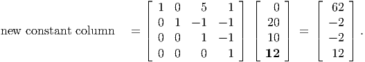

Here, xj denotes the amount of product j produced and si is the slack variable for resource i. For example, product 2 sells for 1 and uses 1 unit each of resource 1 and resource 3. The optimal tableau M* is
- (5 points) Find a matrix Q such that M* = QM.
- (10 points) What is the new optimal vector x* if 8 units of resource 3 are available instead of the original 5?
- (10 points) What is the new optimal vector x* if 12 units of resource 3 are available instead of the original 5?
Solution:
- The first column of Q is the first column of the identity. The remaining columns are the
slack columns in M*, since Q maps the identity onto these columns. We
have:
- The new constant column in M* is
(old constant column in M*) +
(change in resource level) × (s3 column of M*)or, (55 + 3, 5 - 3, 5 - 3, 5 + 3)T = (58, 2, 2, 8)T . (See the next part for an alternative way to calculate this.) Since the new constant column is still nonnegative, the current set of basic variables is still optimal. Thus, the optimal solution is x = (8, 0, 0, 2).
- The new constant column in M* is the product of Q with the modified constant column
in M:
 The modified final tableau is
This is no longer in canonical form and we need to reoptimize using dual simplex. Pivoting on the first row, the pivot column is the s3 column, from the minimum ratio test. This gives

This tableau is in optimal form, so the optimal solution to the modified problem is x = (10, 0, 0, 0) and s = (0, 0, 2).
- (5 points) Let y = (2, 1,-3)T . Show that AT y ≤ 0 and bT y > 0.
- (10 points) What do you conclude about the linear program
Solution:
- We have

as required.
- From the Farkas Lemma, there is no x with Ax = b, x ≥ 0. This is exactly the feasible region for the LP, so the LP is infeasible.
where x ∈ ℝn, r ∈ ℝp, b ∈ ℝm, g ∈ ℝq, and all other vectors and matrices are dimensioned appropriately.
- (8 points) Show that the dual to (P) can be written
- Now let x ∈ ℝ2, r ∈ ℝ3, and
- (8 points) What are the complementary slackness relationships between the primal and dual solutions that must be satisfied by an optimal solution?
- (4 points) Show that y1 = 0 in any optimal solution to (D).
Solutions:
- We can write (P) as
so the dual can be written
Letting v = v+ -v- and introducing slack variables z and t gives the formulation (D) in the question.
-
- There are four sets of inequalities in each problem. They give the complementarity
relationships:
- With the given choice of parameters, the equality constraint in (P) is

The left hand side of the first inequality constraint is then
Thus, from the complementarity relationships we must have y1 = 0 at optimality.
- There are four sets of inequalities in each problem. They give the complementarity
relationships:
123456(6,0)(3,1)(7,0)(5,0)(7,1)(3,0)(7,0)(9,0)(9,1)
Starting from the given feasible solution x, solve the problem using the simplex algorithm for general network flow problems.
Solution:
We need to have a spanning tree to have a basic feasible solution, so choose to include arcs (2, 4) and (4, 6) in the basis, along with the three given positive xe. This gives
123456(6,0)(3,1) B(7,0)(5,0) B(7,1) B(3,0)(7,0) B(9,0)(9,1) B
The dual variables yj for the vertices v must satisfy

The only violated dual constraint is for edge (1, 2):
so arc (1, 2) enters the basis. The flow can be modified around the cycle created by this arc with the basic arcs:
123456(6,0)t(3,1) B1-t(7,0)(5,0) B0+t(7,1) B1-t(3,0)(7,0) B0+t(9,0)(9,1) B1-t
Choosing t = 1 from the minimum ratio test and arbitrarily choosing (1, 3) to leave the basis gives the updated BFS
123456(6,1) B(3,0)(7,0)(5,1) B(7,0) B(3,0)(7,1) B(9,0)(9,0) B
Setting y6 = 0, we then get from the basic arcs that
This is dual feasible, so the BFS is optimal and the shortest path is 1 → 2 → 4 → 6 with length 18.
- (5 points) Find a basic feasible solution using the NW corner rule.
- (10 points) Show that the solution you obtained using the NW corner rule is optimal.
- (10 points) Assume an extra Δ units of supply is available at source 4 and an extra Δ units of demand is required at destination 2. Use sensitivity analysis to determine the increase in total transportation costs for small values of Δ. For what range of Δ does your estimate hold? Would you expect the cost to increase more quickly or less quickly for larger values of Δ?
Solutions:
- The NW corner rule solution is
- With dual variables ui for the sources and vj for the sinks, the basic arcs must satisfy
ui + vj = cij. Setting u1 = 0 and solving for the remaining dual variables
gives
The reduced costs are then
Since the reduced costs are all nonzero, the solution is optimal.
- The dual variable u4 is the shadow price for the supply constraint for supply node 4.
The dual variable v2 is the shadow price for the demand constraint for demand node 2.
Thus, the increase in the objective value is
Arc (4, 2) completes a cycle consisting of arcs (3, 2), (3, 3) and (4, 3). Pushing the flow around the basic arcs instead of directly on (4, 2) gives the updated solution
This is feasible provided Δ ≤ 30.
The cost should increase more quickly for larger values of Δ.